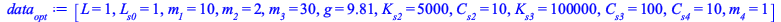
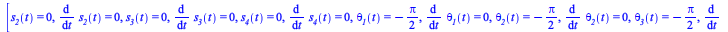

Tune the mass and damping coefficient to minimise the settling time of the system
In this section the mechanical system is solved assuming a mass m4=1 and a damper coefficient Cs4=10.
In the following sections the values of mass and damper are changed in order to find the best combination.
| > | data__opt := [L = 1, L__s0 = 1, m__1 = 10, m__2 = 2, m__3 = 30, g = 9.81,
K__s2 = 5000, C__s2 = 10, K__s3 = 100000, C__s3 = 100,C__s4=10,m__4=1]; |
|  | (7.3.1) |
| > | sys_indexred__opt := [op(convert(ode_sys__opt,list)),op(Phi_tt)]: <%> |
| (7.3.2) |
| > | MM, bb := GenerateMatrix( sys_indexred__opt,[op(diff(q_vars__opt,t,t)),lambda__1(t),lambda__2(t)]); |
| (7.3.3) |
| > | [s__2(t) = 0, diff(s__2(t),t) = 0,s__3(t) = 0, diff(s__3(t),t) = 0,s__4(t) = 0, diff(s__4(t),t) = 0,theta__1(t) = -Pi/2,diff(theta__1(t),t)=0,theta__2(t) = -Pi/2,diff(theta__2(t),t) = 0,theta__3(t) = -Pi/2,diff(theta__3(t),t)=0,theta__4(t) = -Pi/2,diff(theta__4(t),t)=0]; |
|  |
(7.3.4) |
| > | ics_v__opt := {%} union subs( %, data, diff(sol_kine,t) ); |
| (7.3.5) |
| > | ics__opt := ics_v__opt[2]; |
| (7.3.6) |
| > | evalf(subs(ics__opt, data__opt, t=0, MM)):
evalf(subs(ics__opt, data__opt, t=0, bb)): tmp:= LinearSolve(%%,%); |
| (7.3.7) |
| > | <[op(diff(q_vars__opt,t,t)),lambda__1(t),lambda__1(t)]> = tmp;
ics_lambda := [lambda__1(t) = tmp[7],lambda__2(t) = tmp[8]]; |
| (7.3.8) |
| > | dae_sys := convert(subs(data__opt,[op(convert(ode_sys__opt,list)),op(Phi)]),set): <op(%)>;
full_ics := subs( t = 0, convert(convert(ics__opt,set) union {ics_lambda[1]} union {ics_lambda[2]}, D)); |
| (7.3.9) |
| > | sol_dae__opt := dsolve(convert(dae_sys,set) union full_ics,numeric,implicit=true,maxfun=300000); |
| (7.3.10) |
| > | TF := 10: |
| > | odeplot(sol_dae__opt,subs(data,[t,G4[1]]),t=0..TF,
labels = ["time (s)", "(m)"], title = "Coordinate x of G4"); |
| > | odeplot(sol_dae__opt,subs(data,[t,G4[2]]),t=0..TF,
labels = ["time (s)", "(m)"], title = "Coordinate y of G4"); |
| > | odeplot(sol_dae__opt,subs(data,[t,sqrt(diff(G4[1],t,t)^2+diff(G4[2],t,t)^2)]),t=0..TF,
labels = ["time (s)", m/s^2], title = "Acceleration of G4"); |
| > | odeplot(sol_dae__opt,subs(data,[t,G1[1]]),t=0..TF,
labels = ["time (s)", "(m)"], title = "Coordinate x of G1"); |
| > | odeplot(sol_dae__opt,subs(data,[t,G1[2]]),t=0..TF,
labels = ["time (s)", "(m)"], title = "Coordinate y of G1"); |
 |
| > | odeplot(sol_dae__opt,subs(data,[t,sqrt(diff(G1[1],t,t)^2+diff(G1[2],t,t)^2)]),t=0..TF,
labels = ["time (s)", m/s^2], title = "Acceleration of G1"); |